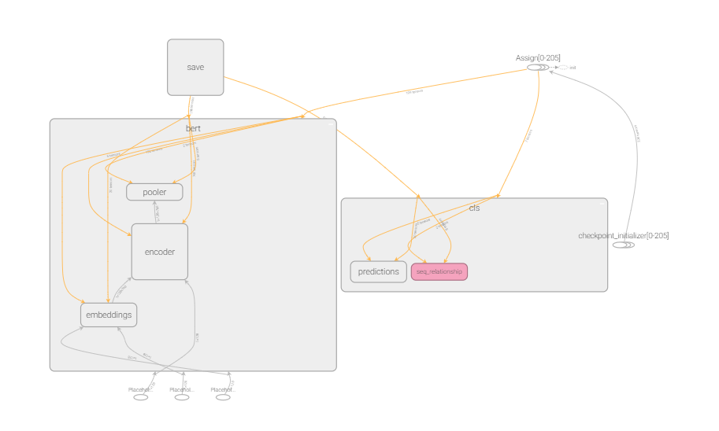

问答系统
SQuAD数据集合
SQuAD（Stanford Question Answering Dataset）(官网)是斯坦福大学提供的问答数据集，包含 10 万个（问题，原文，答案）三元组，原文来自于 536 篇维基百科文章，而问题和答案的构建主要是通过众包的方式，让标注人员提出最多 5 个基于文章内容的问题并提供正确答案，且答案出现在原文中。
SQuAD_train_v2.0.json 结构

什么是BERT
BERT, or Bidirectional Encoder Representations from Transformers, is a new method of pre-training language representations which obtains state-of-the-art results on a wide array of Natural Language Processing (NLP) tasks.
BERT的全称是Bidirectional Encoder Representation from Transformers，即双向Transformer的Encoder，因为decoder是不能获要预测的信息的。模型的主要创新点都在pre-train方法上，即用了Masked LM和Next Sentence Prediction两种方法分别捕捉词语和句子级别的representation。

预训练的BERT
由于从头开始(from scratch)训练需要巨大的计算资源，因此Google提供了预训练的模型(的checkpoint)，目前包括英语、汉语和多语言3类模型，而英语又包括4个版本：
BERT-Base, Uncased 12层，768个隐单元，12个Attention head，110M参数
BERT-Large, Uncased 24层，1024个隐单元，16个head，340M参数
BERT-Base, Cased 12层，768个隐单元，12个Attention head，110M参数
BERT-Large, Uncased 24层，1024个隐单元，16个head，340M参数。
Uncased的意思是保留大小写，而cased是在预处理的时候都变成了小写。
对于汉语只有一个版本：
BERT-Base, Chinese: 包括简体和繁体汉字，共12层，768个隐单元，12个Attention head，110M参数。
另外一个多语言的版本是BERT-Base, Multilingual Cased (New, recommended)，它包括104种不同语言，12层，768个隐单元，12个Attention head，110M参数。它是用所有这104中语言的维基百科文章混在一起训练出来的模型。所有这些模型的下载地址都在这里。
这么多版本我们应该选择哪一个呢？如果我们处理的问题只包含英文，那么我们应该选择英语的版本(模型大效果好但是参数多训练慢而且需要更多内存/显存)。如果我们只处理中文，那么应该使用中文的版本。如果是其他语言就使用多语言的版本。
对下载的压缩文件进行解压，可以看到文件里有五个文件，其中bert_model.ckpt开头的文件是负责模型变量载入的，而vocab.txt是训练时中文文本采用的字典，最后bert_config.json是BERT在训练时，可选调整的一些参数。
Transformer是谷歌在17年做机器翻译任务的“Attention is all you need”的论文中提出的，引起了相当大的反响。 每一位从事NLP研发的同仁都应该透彻搞明白Transformer，它的重要性毫无疑问，尤其是你在看完我这篇文章之后，我相信你的紧迫感会更迫切，我就是这么一位善于制造焦虑的能手。不过这里没打算重点介绍它，想要入门Transformer的可以参考以下三篇文章：一个是Jay Alammar可视化地介绍Transformer的博客文章The Illustrated Transformer ，非常容易理解整个机制，建议先从这篇看起， 这是中文翻译版本；第二篇是 Calvo的博客：Dissecting BERT Part 1: The Encoder ，尽管说是解析Bert，但是因为Bert的Encoder就是Transformer，所以其实它是在解析Transformer，里面举的例子很好；再然后可以进阶一下，参考哈佛大学NLP研究组写的“The Annotated Transformer. ”，代码原理双管齐下，讲得也很清楚。
BERT-Base, Cased 12层 解析
{
"attention_probs_dropout_prob": 0.1, #乘法attention时，softmax后dropout概率
"hidden_act": "gelu", #激活函数
"hidden_dropout_prob": 0.1, #隐藏层dropout概率
"hidden_size": 768, #隐藏单元数
"initializer_range": 0.02, #初始化范围
"intermediate_size": 3072, #升维维度
"max_position_embeddings": 512,#一个大于seq_length的参数，用于生成position_embedding "num_attention_heads": 12, #每个隐藏层中的attention head数
"num_hidden_layers": 12, #隐藏层数
"type_vocab_size": 2, #segment_ids类别 [0,1]
"vocab_size": 30522 #词典中词数
}
config, # BertConfig对象
3 is_training,
4 input_ids, # 【batch_size, seq_length】
5 input_mask=None, # 【batch_size, seq_length】
6 token_type_ids=None, # 【batch_size, seq_length】
7 use_one_hot_embeddings=False, # 是否使用one-hot；否则tf.gather()
主体结构

12层tansorfmore

每一层里面的结构

参考资料
-
BERT代码阅读 http://fancyerii.github.io/2019/03/09/bert-codes/#%E9%A2%84%E8%AE%AD%E7%BB%83%E7%9A%84%E6%A8%A1%E5%9E%8B ↩